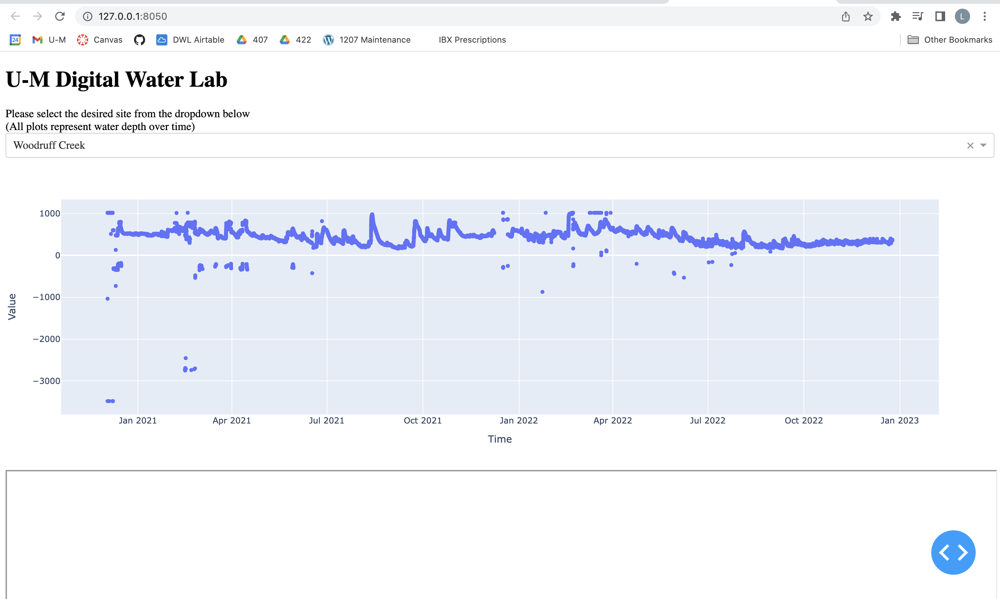

Digital Water Lab: FEAST Project Work
Timeline: 1 year (2 semesters)
Role: UX designer and engineer, Front-end developer
Tools: Python, Plotly, ArcGIS, Figma
Project description: The Digital Water Lab FEAST project enables an interdisciplinary team of students to learn about environmental sensors, specifically around water and watersheds, and collaboratively create dynamic tools and technologies with that data that inform and empower community stakeholders.
This project was broken down into two distinct parts; the two semesters were very different.
Semester 1
Stages and Deliverables
Defining the Problem and Project Scope
Through the first half of this semester, my team worked with community stakeholders to understand who our users are and how they interact with data and tools to support community objectives and goals. This was primarily experience research; we assessed the existing lab resources for usability and aesthetic problems both on our own and with stakeholders and brainstormed potential solutions to these issues.
- Deliverable: Problem statement memo
Prototyping
After we established the primary problems with the current site, we began developing prototypes of what we wanted the platform to look like. We then presented our prototype models to representatives of the Huron River Watershed Council, our primary stakeholder, and received more feedback and revised further.
- Deliverable: Prototypes
Research
Soon we began working to create the first semester deliverable for our project – an updated dashboard website. Here we found that a lot more research was required as none of our team members had ever worked with any of the potential platforms (Plotly, Grafana, Tableau) before this project. We spent a decent amount of time investigating the pros and cons of each of these platforms and understanding how they each constructed a functional dashboard site. We finally came to a decision on which to use and then moved into more specific research of the functionality and documentation of this one software (Plotly!).
- Deliverable: Platform memo
Development
At this point in the project, we thought it would be beneficial to further divide into sub-teams based on our prior experiences and capabilities. We developed a coding team, that worked on the fundamentals of the site development. We also established a creative team, who worked to bring our prototype visualizations (scatterplots, maps, subway maps, etc) to life. Having developed static versions of all of these features, we ended the semester working to implement each into the site and allow for interactions between them.
- Deliverable: Partially-completed site, Appendix A
Reflection
Outcome
Unfortunately, since we really challenged ourselves here, we were unable to finish some of the more advanced features we had hoped to have on the site. In addition, we were never able to host the site outside our local machines as the commercial license was way too expensive and we didn't have the skills to find a workaround.
- See a screenshot of our final product for semester 1 in Appendix A
Learnings
This semester taught us that you have to make a project plan or you may ultimately go nowhere. We did a ton of work this semester, but not necessarily the work we should have been doing. Moving into the second semester, I saw a few main takeaways:
- Set due dates for milestone tasks
- This one is twofold; we neither set milestones nor due dates this semester. Taking this project one day at a time allowed us to be creative and learn a lot but was not very effective at working towards execution. Setting distinct stages and due dates for their deliverables guarantees we will achieve something tangible by the end of semester two.
- Utilize subteams of 2-3
- Since we had both a large (7 members) and diverse (interdisciplinary) team, working altogether was never really feasible. Using subteams will allow us to divide and conquer and at the same time collaborate within those groups more effectively.
- Find a better way to maintain accountability
- In addition to the methods mentioned in the prior takeaways, I believe that assigning task leads will help individual members feel a greater sense of repsonsibility and involvement in the project.
Summer Developments
It was clear at the end of our first semester that we needed some sort of direction moving forwards. Those of us intending to stay on asked our faculty mentors for a (hopeful) list of deliverables they deemed valuable so we could spend our time on execution. They gave us 6 and said they'd be happy with 3.
At the beginning of the summer we lost two members. The four of us that stayed throughout worked to align on a project plan for the upcoming fall semester focused on 3 of the deliverables we had been given: a subway map, a GIS model, a citizen engagement project. We also left time for work on the 3 other deliverables we had been given but did not assign those project leads.
Since I had the most coding experience and was the only design-oriented major, I planned to take charge on the subway map (which we anticipated to be the most code-heavy). Two of my three colleagues agreed to lead the other projects.
At the end of the summer we gained two new computer science members. This was fantastic because I really felt the expertise was necessary but presented a challenge in terms of our project plan. To create a space where everyone's time was being used most efficiently, we agreed that I would lead the subway project through the design stage and then pass it off to a CS colleague when we reached development.
Semester 2
Stages and Deliverables (Individual)
Subway Map Project
This was the stage of the project that best fit my expectations for the entire FEAST experience. As the design lead, I utilized our stakeholder research from last semester to develop an initial Figma prototype. I presented it to the group, got feedback, made modifications, and then handed the design off once it had advisor approval. Although my engagement with this project was very short, it gave meaning to a lot of my work from the prior semester and allowed me to utilize my expertise rather than learning new skills.
- Deliverable: Subway map prototypes, Appendix B
GIS Model Project
After my role with the subway map was complete I shifted over to digitization of Huron River Watershed bathymetry data.
- Deliverable: Cedar Island Lake GIS model, Appendix C
GIS Digitization Automation Efforts
We faced an interesting dilemma with digitization: it was slow and tedious, but it worked. We had the option to dedicate a portion of our time towards automating this process with different external programs and softwares but risked failing and wasting time yet again.
Naturally I wanted to take advantage of this opportunity to learn and chose to do some automation research. I didn't get it to work, but I worked with some new softwares and had some interesting findings. My efforts are documented below.
- Deliverable: Digitization automation efforts documentation, Appendix D
Appendix
Appendix A: Semester 1 final site
*Note: The bottom rectangle included a Mapbox map but it has since broken as the team member who owned it left the team.
